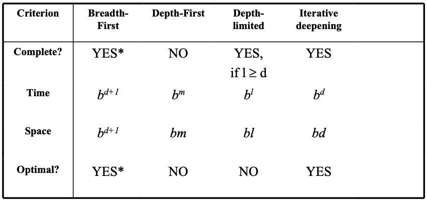
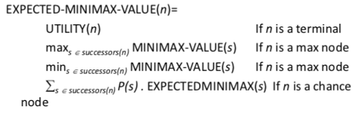

State space search
How do we find the solutions of previous problems?
-
search the state space
-
search through explicit tree generation: root is initial state, nodes/leaves generated through successor function
-
search generates a graph
state: representation of a physical configuration
node: data structure in the search tree. it contains state, parent node, actions, etc.
strategy defines picking order of node expansion
uninformed methods: only use problem definition
informed methods: use heuristic function to estimate cost of solution
evaluating performance:
-
does it always find a solution if there is one? (completeness)
-
does it find least-cost solution? (optimality)
-
how many nodes generated/expanded? (time complexity)
-
how many nodes are stored in memory during search? (space complexity)
-
complexity measured in terms of:
-
b: max branching factor of search tree)
-
d: depth of least cost solution
-
m: max depth of state space, could be infinite
-
time/space complexity measured in terms of max branching factor of search tree, depth of least cost solution, max depth of state space (could be infinite)

Breadth-first (BF) search
-
algorithm:
-
expand shallowest unexpanded node
-
implementation - fringe (nodes that have to be explored) is a FIFO queue
-
evaluation:
-
completeness: yes, if branching factor b is finite
-
time complexity: if every state has b successors, and solution is at depth d, then \(O(b^{d+1})\) because of number of nodes generated
-
space complexity: shitty if every node has to be in memory - \(O(b^{d+1})\)
-
optimality: in general yes, unless actions have different cost
-
memory requirements are bigger problem than execution time
Depth-first (DF) search
-
algorithm:
-
expand deepest unexpanded node
-
implementation: fringe is a stack
-
evaluation:
-
completeness: no, unless search space is finite and no loops are possible
-
time complexity: shitty if m is larger than d (depth of optimal solution) -- \(O(b^m)\). but if many solutions, faster than BF
-
space complexity: backtracking search uses less memory, one successor instead of all b -- \(O(bm+1)\)
-
optimality: no, same issues as completeness
Depth-limited search
-
DF-search with depth limit l (nodes at depth l have no successors)
-
solves infinite-path problem
-
evaluation:
-
time: \(O(b^l)\)
-
space: \(O(bl)\)
-
completeness: not if l < d
-
optimality: not if if l > d
Iterative deepening search
-
strategy to find best depth limit l
-
often used in combination with DF search
-
after each iteration, throw away everything and increase depth limit
-
combines benefits of DF (space complexity) and BF search (time complexity)
-
evaluation:
-
completeness: yes (no infinite paths)
-
time: \(O(b^d)\)
-
space: \(O(bd)\)
Heuristic function: "educated guess that reduces/limits search for solutions"
informedness property of heuristics:
-
two heuristics \(h_1(n),\; h_2(n)\) with \(0 \leq h_1(n) \leq h_2(n) \leq h*(n)\)
-
then \(h_2(n)\) is more informed than \(h_1(n)\)
-
with \(h_1\) fewer nodes have to be searched with \(h_2\)
-
but \(h_2\) is often more expensive to calculate
-
perfect heuristics: \(h(n) = h*(n)\)
-
trivial heuristics: \(h(n) = 0\)
Best-first search
-
the general approach of informed search
-
node selected for expansion based on evaluation function f(n)
-
evaluation function measures distance to goal, choose node which appears best
-
fringe is queue in order of decreasing desirability
A Search
best-known form of best-first search
avoid expanding paths that are already expensive
evaluation function: \(f(n) = g(n) + h(n)\)
-
g(n) the cost so far to reach node n
-
h(n) estimated cost to get from node n to goal
-
f(n) estimated total cost of path through node n to goal
A* Search
A search, but with an admissible heuristic
-
heuristic is admissible if it never overestimates the cost to get to goal
-
admissible heuristics are optimistic
-
formally: \(h(n) \leq h*(n)\) where \(h*(n)\) is true cost from n to goal
evaluation:
-
complete: yes
-
time: exponential with path length
-
space: all nodes are stored
-
optimal: yes
Adversarial search
search has no adversary, solution is a (heuristic) method for finding a goal
games have an adversary, solution is a strategy. time limits force an approximate solution.
you need a function to evaluate the "goodness" of a game position
types of games:
|
|
deterministic
|
chance
|
|
perfect information
|
chess, checkers, go, othello
|
backgammon, monopoly
|
|
imperfect information
|
|
bridge poker, scrabble, nuclear war
|
Minimax
Setup
two players: MAX, MIN
MAX moves first, take turns until game is over. winner gets award, loser gets penalty.
how does this relate to search?
-
initial state: game configuration e.g. with chess
-
successor function: list of <move, state> pairs with legal moves
-
terminal test: game finished?
-
utility function: numerical value of terminal states (win +1, lose -1, draw 0)
-
MAX uses search tree to determine next move
Optimal strategies
find contingent strategy for MAX assuming infallible MIN.
assume that both players play optimally.
given game tree, optimal strategy can be found with minimax value of each node:
minimax(n) = utility(n) if n is a terminal
minimax(max(successors of n)) if n is a max node
minimax(min(successors of n)) if n is a min node
Evaluation
-
complete: yes
-
time: \(O(b^m)\)
-
space: \(O(bm)\)
-
optimal: yes
Reducing problems of complexity with Minimax
Cutting off search:
instead of if TERMINAL(state) then return UTILITY(state) do if CUTOFF-TEST(state, depth) then return EVAL(state)
this introduces fixed-limit depth. also loses completeness!
utility: value based on quality of state
heuristics: value based on estimation of quality of state
heuristic EVAL:
-
produces estimate of expected utility of a game from a given position
-
should order terminal nodes in same way as utility
-
computation shouldn't take too long
Alpha-Beta pruning (efficient Minimax)
with minimax, the number of states is exponential to number of moves
so, don't examine every node and prune the subtrees you don't have to examine
Alpha: value of best MAX choice so far
Beta: value of best MIN choice so far
you prune the rest of the level if, at any point, beta <= alpha.
pruning doesn't affect final results, entire subtrees can be pruned
good move ordering improves effectiveness of pruning
with 'perfect ordering', time complexity is: \(O(b^{m/2})\)
problems:
-
contingency: percepts provide new info
-
exploration: when states/actions of environment are unknown
-
sensorless/conformant: agent may have no idea where it is
-
rollout:
-
assume a belief state (with perfect info)
-
play random game in that state.
-
average the rollouts
-
choose one with max average
Games with chance

Summary (Schnapsen)
Phase 2: minimax & alpha-beta pruning
Phase 1: PIMC sampling
what next? give the agent information about the game
Search direction
Data-driven: start with initial state (e.g. a maze)
Goal-driven: start with goal state, but has bigger branching factor (TODO confirm this)